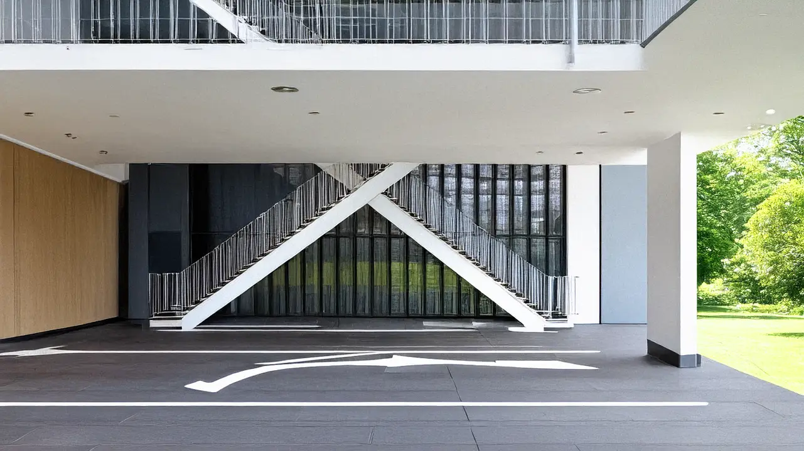

體育館 電梯18 停車場3無障礙坡道9出入口23無障礙廁所6 其他 女生廁所1 男生廁所1無障礙廁所1性別友善廁所1電梯88無障礙坡道1 目前顯示第1張，共4張  帶我前往 開放時間：09:00 - 18:00 要加入圖示只要使用 fa fa-***的CLASS 體育館的介紹文字，沒有限制字數，依照資料量自動稱高長度足夠，可以更多或是換行都沒有問題 台中市北區雙十路一段16號 樓層設施 室外走廊 大門口無障礙坡道 五號門無障礙坡道側門無障礙坡道 1 樓期刊室 女生廁所無障礙廁所性別友善廁所電動升降裝置大門口無障礙坡道五號門無障礙坡道 2 樓圖書室 男生廁所性別友善廁所
開放時間：09:00 - 18:00 要加入圖示只要使用 fa fa-***的CLASS 體育館的介紹文字，沒有限制字數，依照資料量自動稱高長度足夠，可以更多或是換行都沒有問題 台中市北區雙十路一段16號
教學大樓 電梯18 停車場3無障礙坡道9出入口23無障礙廁所6 其他 女生廁所1 男生廁所1無障礙廁所1性別友善廁所1電梯88無障礙坡道1 目前顯示第1張，共4張 帶我前往 開放時間：09:00 - 18:00 要加入圖示只要使用 fa fa-***的CLASS 教學大樓的介紹文字，沒有限制字數，依照資料量自動稱高長度足夠，可以更多或是換行都沒有問題 台中市北區雙十路一段16號 樓層設施 室外走廊 大門口無障礙坡道五號門無障礙坡道 1 樓期刊室 女生廁所無障礙廁所性別友善廁所電動升降裝置大門口無障礙坡道五號門無障礙坡道 2 樓圖書室 男生廁所性別友善廁所
開放時間：09:00 - 18:00 要加入圖示只要使用 fa fa-***的CLASS 教學大樓的介紹文字，沒有限制字數，依照資料量自動稱高長度足夠，可以更多或是換行都沒有問題 台中市北區雙十路一段16號
圖書館 電梯18 停車場3無障礙坡道9出入口23無障礙廁所6 其他 女生廁所1 男生廁所1無障礙廁所1性別友善廁所1電梯88無障礙坡道1 目前顯示第1張，共4張 帶我前往 開放時間：09:00 - 18:00 要加入圖示只要使用 fa fa-***的CLASS 圖書館的介紹文字，沒有限制字數，依照資料量自動稱高長度足夠，可以更多或是換行都沒有問題 台中市北區雙十路一段16號 樓層設施 3樓 女生廁所男生廁所無障礙廁所性別友善廁所 2樓 男生廁所性別友善廁所 1樓 女生廁所無障礙廁所性別友善廁所電動升降裝置大門口無障礙坡道五號門無障礙坡道 地下一樓 女生廁所男生廁所無障礙廁所教職員停車場電動升降裝置 室外 大門口無障礙坡道五號門無障礙坡道
開放時間：09:00 - 18:00 要加入圖示只要使用 fa fa-***的CLASS 圖書館的介紹文字，沒有限制字數，依照資料量自動稱高長度足夠，可以更多或是換行都沒有問題 台中市北區雙十路一段16號
目前顯示第1張，共4張 這是學校的教學大樓，主要用於課堂授課和行政辦公，建築設計融合了現代與傳統元素。 校門口是學校的主要入口，每天有大量師生和訪客進出。 這是學校的圖書館，擁有超過10萬冊書籍與多種學術資源，提供學生自習與研究的空間。 體育館的側門通常用於運動隊伍的進出，也有無障礙通道方便行動不便者使用。